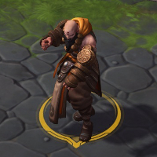
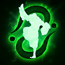
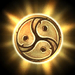
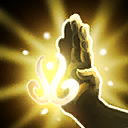
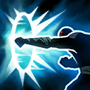
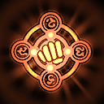
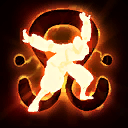
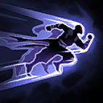
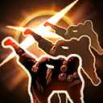
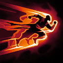

Kharazim
Welcome to our Kharazim guide for Heroes of the Storm. Here you will learn everything you need to know in order to play Kharazim in a competitive environment, whether you play on your own or with a team.
Support Build
| Level 1 | Level 4 | Level 7 | Level 10 | Level 13 | Level 16 | Level 20 |
|---|---|---|---|---|---|---|
|  |  |  |  |  |
Kharazim's Support Build focuses on AoE healing and last-second saves using Divine Palm Icon Divine Palm. Since Kharazim usually has to expose himself more than other Supports in order to heal nearby allies, playing this Build requires a keen eye and swift reflexes. Casting Radiant Dash Icon Radiant Dash, in particular, on allies in need can really challenge your micro-management skills at times, which makes Support Kharazim a quite challenging yet rewarding experience.
Damage Build
| Level 1 | Level 4 | Level 7 | Level 10 | Level 13 | Level 16 | Level 20 |
|---|---|---|---|---|---|---|
|  |  |  |  |  |
The Damage Build relies on both outstanding mobility and strong damage output due to talents like Blinding Speed Icon Blinding Speed at Level 7 or Way of the Hundred Fists Icon Way of the Hundred Fists at Level 16. Epiphany Icon Epiphany finalizes Kharazim's offensive Build at Level 20 by allowing him to instantly restore all of his Radiant Dash Icon Radiant Dash charges at once.
Go Back